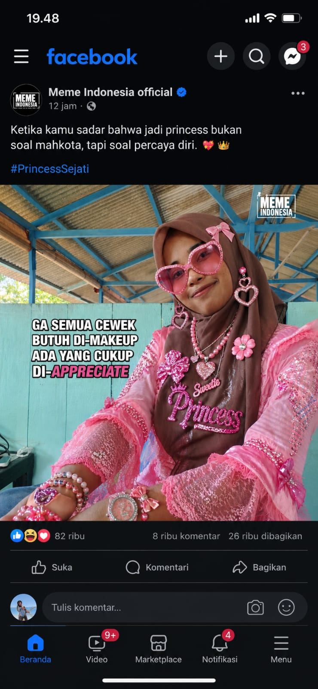
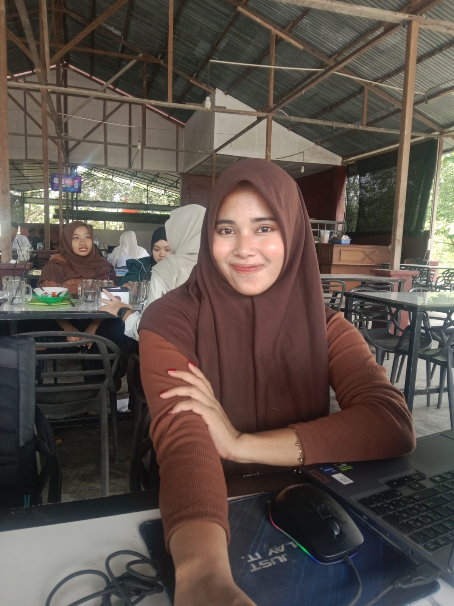
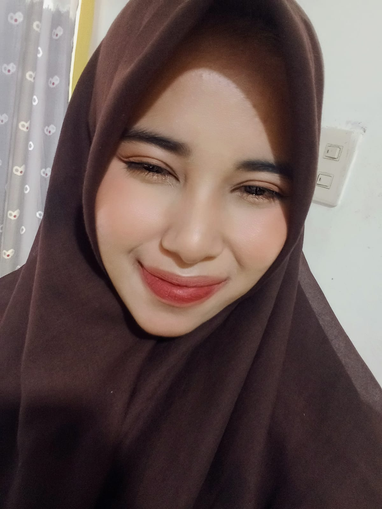
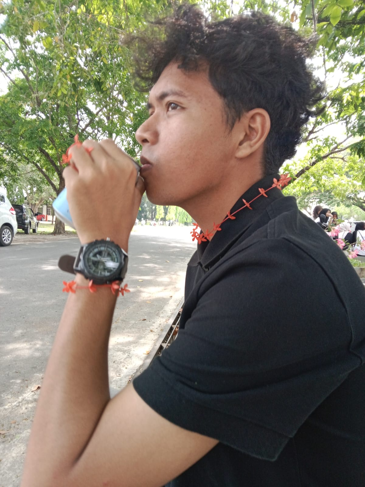
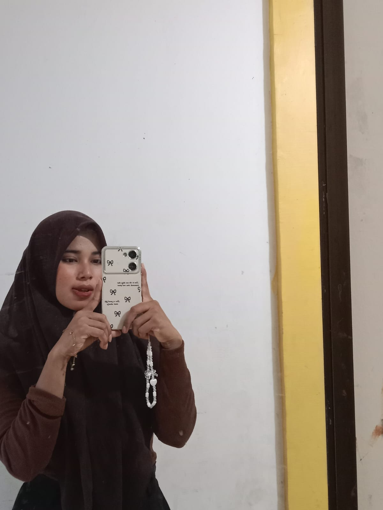
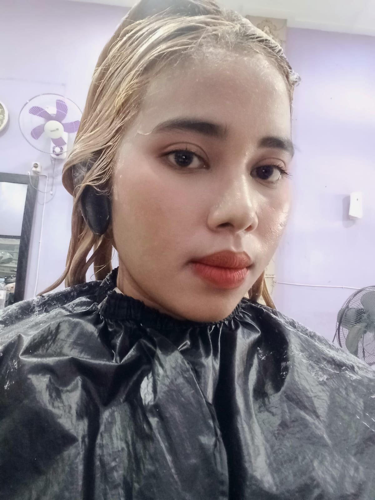

Biar cerita kecil ini kebuka pelan-pelan, ditemani lagu dan rasa yang hangat.
Dhafir & Intan






Happy Anniversary
Dhafir&Intan
3 Tahun 7 Bulan
Makasih ya, udah jadi bagian paling hangat dari cerita ini.
Setiap foto, chat random, dan tawa kecil di halaman ini cuma cara sederhana buat bilang: aku bahagia ceritanya masih sama kamu.
Surat Singkat
Buat kamu, tempat pulang paling nyaman
Untuk Intan,
Tiga tahun tujuh bulan ternyata udah sejauh ini ya. Dari banyak hari yang kita lewati, aku makin sadar kalo bahagia sering datang dari hal-hal simpel: kabar singkat, tawa kecil, cerita random, sampai caramu yang kadang nyebelin tapi tetap selalu aku kangenin.
Makasih sudah tetap di sini, nemenin aku, dan jadi rumah yang rasanya paling nyaman. Aku memang gk tahu semua hal di depan bakal seperti apa, tapi aku tahu satu hal: kalau sama kamu, aku masih mau terus coba.
Timeline Perjalanan
Jalan kecil cerita kita
Awal Cerita
Waktu semuanya mulai dari rasa penasaran yang sederhana.
Dari satu momen kecil, pelan-pelan jadi rasa yang makin hangat.
Mulai Dekat
Dari chat kecil, lama-lama jadi hal yang ditunggu.
Ada hari yang rasanya kurang lengkap kalau belum saling cerita sedikit saja.
Banyak Cerita
Kita belajar saling ngerti, saling jaga, dan saling pulang.
Nggak selalu mulus, tapi selalu ada alasan buat tetap saling pilih.
3 Tahun 7 Bulan
Masih di sini, masih saling pilih, masih pengin lanjut lebih jauh.
Hari ini jadi pengingat kecil kalau ternyata kita sudah sejauh ini bareng-bareng.
Hal yang Aku Suka dari Kamu
Hal kecil dari kamu yang selalu aku ingat
01Cara kamu bikin hari biasa jadi lebih hidup02Senyummu yang selalu bisa bikin aku tenang03Sifat nyebelinmu yang anehnya tetap aku sayang04Cara kamu hadir, bahkan dari hal-hal kecil05Kamu yang selalu punya tempat sendiri di hati aku
Galeri Kenangan
Foto-foto kita
Awal yang manisTawa yang disimpanHari sederhanaTempat favoritMomen kecilCerita baru
Lagu Untuk Kita
Kalimat kecil yang ikut nyanyi
Tiga tahun tujuh bulan
Kita masih di sini
Bukan selalu mudah
Tapi selalu berarti
Aku masih ingat awal kita
Canggung sedikit, banyak tertawa
Dari pesan singkat yang sederhana
Sampai jadi cerita yang panjang juga
Tiga tahun tujuh bulan bersamamu
Masih jadi bagian terbaik hariku
Bukan karena semua selalu sempurna
Tapi karena kita tetap memilih bersama
Tiga tahun tujuh bulan dan aku tahu
Masih banyak jalan yang ingin kutempuh
Selama ada kamu di sebelahku
Hal sederhana pun terasa seru
Penutup
Buat hari ini, besok, dan cerita-cerita setelah ini...
Aku masih mau kamu. Masih pilih kamu. Masih sayang kamu.
Rahasia kecil:
dari semua kemungkinan, aku tetap paling senang karena ceritanya sama kamu.